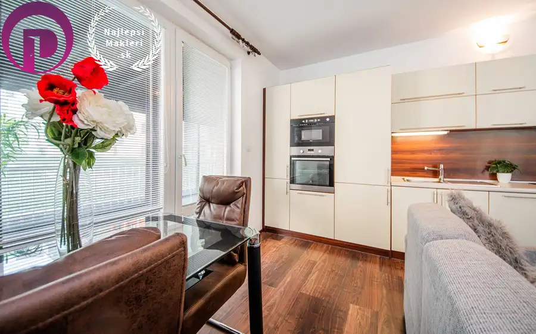
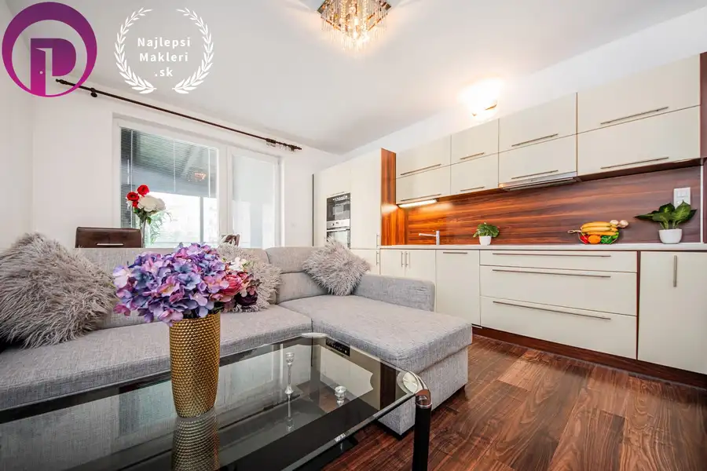
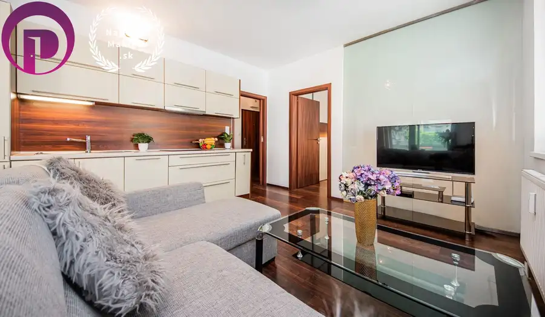
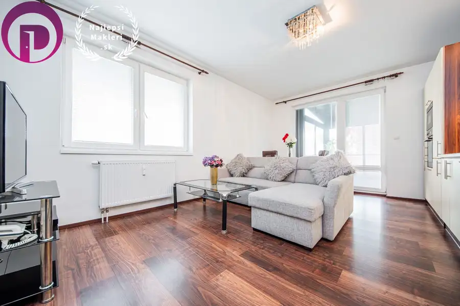
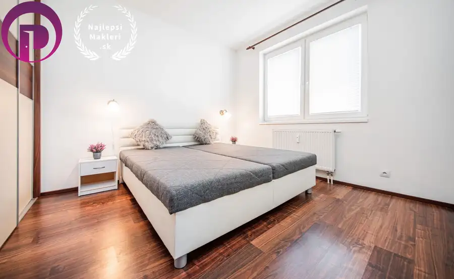
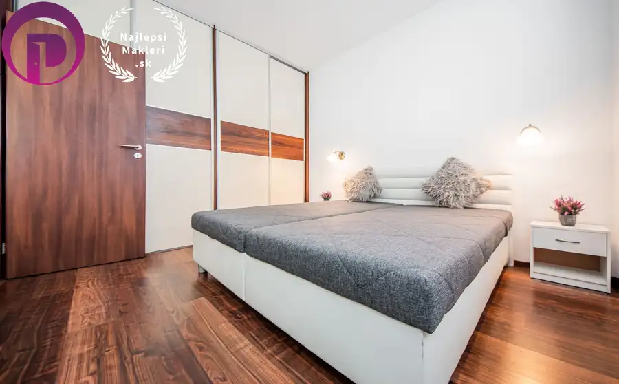
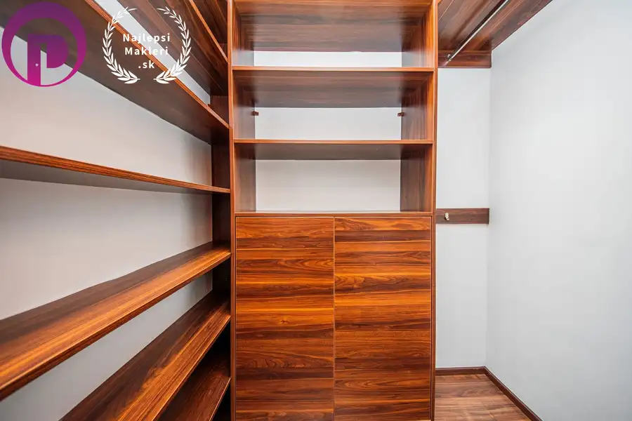
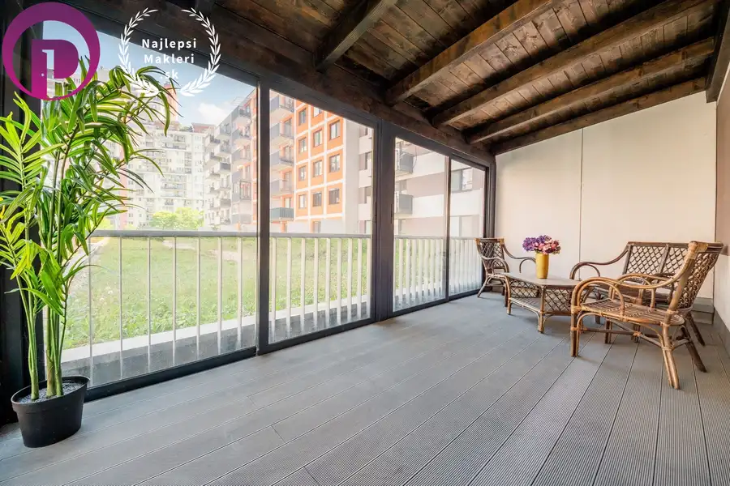

2i byt – baii - nivy: 59 m2, moderne zariadený, komora, veľká terasa a garážové státie
Ružinov, Bratislava








- Dispozícia2-izbový
- Plocha59 m²
- Poschodie2. z 14
- StavNovostavba
- VlastníctvoOsobné
- Energetická triedaB
O nehnuteľnosti
2izby – BAII - NIVY: 59 m2, MODERNE zariadený, KOMORA, VEĽKÁ TERASA a GARÁŽOVÉ STÁTIEEXKLUZÍVNE ponúkame na predaj 2izby s priestrannou terasou, z ktorej je pekný výhľad.Nehnuteľnosť pozostáva z apartmánu, terasy a garážového státia.Veľká zasklená terasa s posedením a výhľadom.Vlastné garážové státie v suteréne bytového domu.Kvalitné vybavenie nehnuteľnosti napr. armatúry v celej nehnuteľnosti zn. Hansgrohe, Grohe a keramika zn. Laufen.Bývanie na Nivách je ideálne pre ľudí, ktorí oceňujú mestský životný štýl a majú radi aktívne prostredie s výbornou dostupnosťou k službám a doprave.NEHNUTEĽNOSŤ:Bratislava II – Nivy – Jégého ulicapodlažie: 2/14 zariadenýcelková plocha: 46,3m2 + terasa 12,9m2 počet obytných izieb: 2nebytové priestory: garážové státieOrientácia: SV, SZDETAILNÝ POPIS:Predsieň+ bezpečnostné dvere+ audiovrátnik+ vešiak + vstup do komoryKomora+ policový systém na mieruKuchyňa+ kuchynská linka na mieru s dostatkom pracovného priestoru+ kuchyňa je prepojená s obývacou izbou a jedálňou, čím vytvára jednotný obývací priestor+ vstavaná chladnička s mrazničkou Zanussi+ vstavaná elektrická rúra zn. Elektrolux+ vstavaná mikrovlnná rúra zn. Whirlpool+ vstavaná umývačka riadu zn. Siemens+ sklokeramická varná doska+ nerezový drez a armatúra zn. Grohe+ odsávač pár+ jedálenský stôl Obývacia izba+ otvorený priestor so vstupom na terasu+ rohová sedacia súprava+ stolík pod TV + sklenený konferenčný stolíkSpálňa+ dostatočne priestranná a slnečná+ manželská posteľ+ dva nočné stolíky s osvetlením+ vstavaná šatníková skriňa po celej dĺžke steny+ sklená stena ktorá presvetľuje obe izbyKúpeľňa + moderný sprchový kút+ keramika zn. Laufen+ armatúry zn. Hansgrohe+ odsávanie+ práčka+ podomietkový splachovací systém zn. GroheTerasa+ zasklená s izolačným dvojsklom+ dostatočne veľká na posedenie pre viacerých hostí+ kreslá a stôlOSTATNÉ VYBAVENIE A ZARIADENIE:Okná+ plastová okná s izolačným dvojsklomPodlahy+ plávajúca podlaha+ dlažba v kúpeľni a na WC Náklady+ mesačná zálohová platba správcovi je 95,- EUR mesačne/1 osoba + 15,68,- EUR garážové státieInternet a TV+ VNETLOKALITA+ širšie centrum+ na skok na legendárne trhovisko Miletičova+ strategická lokalita v rámci mesta – kompletná občianska vybavenosť, MHD pár krokov od domu+ v najbližšom okolí množstvo zelene, detské ihrisko a aj letné kúpalisko Delfín+ kompletná občianska vybavenosť s množstvom obchodov, reštaurácií, kaviarní, služieb, školy, škôlky a zdravotnícke strediská+ pešia dostupnosť historického centra mesta aj blízkych obchodných centier napr. Central+ široká sieť MHD do všetkých častí Bratislavy a len pár minút od domu je aj napojenie na diaľničný obchvat+ pokojná lokalita, množstvo parkov a zeleneBYTOVÝ DOM:+ novostavba+ v suteréne bytového domu sa nachádza vlastné garážové státieCENA: 254.990 EUR+ 25.000,- EUR garážové státie+ vrátane sprostredkovateľskej provízie+ cena nábytku a zariadenia dohodouPonúkame kompletný servis pri predaji, kúpe a prenájme nehnuteľností:ŽIADNE ĎALŠIE POPLATKYVšetky štandardné poplatky spojené s prevodom vlastníckych práv na katastrálnom úrade HRADÍME ZA VÁS.NAJVYŠŠIA PRÁVNA OCHRANABezpečnosť obchodu GARANTOVANÁ AUTORIZOVANÝMI ZMLUVAMI. Všetky zmluvy a dokumenty sú vypracované našou advokátskou kanceláriou špecializujúcou sa na realitné právo.POSTARÁME SA O VÁS OD A PO ZPokojne vás prevedieme celým obchodom - od prvej obhliadky až po odovzdanie kľúčov novému majiteľovi. Zabezpečíme BEZPLATNE MARKETING šitý na mieru vašej nehnuteľnosti. BEZPLATNE získate DAŇOVÉ PORADENSTVO spojené s predajom nehnuteľnosti. A pomôžeme vám nájsť nový domov.AJ MAKLÉRA MÔŽETE MAŤ RADI :-)KONTAKTPeter POLÁČIK, RSc.0915 131 373POLACIK@NajlepsiMakleri.skwww.NajlepsiMakleri.sk Copyright NajlepšíMakléri.sk, s.r.o. – Fotografie, obrázky, videá a textysú autorským dielom a majetkom spoločnosti NajlepšíMakléri.sk, s.r.o
Parametre
- Bezpečnosť
- Bezpečnostné dvere
- Cena vrátane energií
- Nie
- Doprava
- MHD
- Druh
- 2 izbový byt
- Dátum zverejnenia
- 08. 05. 2026
- Energetický certifikát budovy
- B
- Orientácia
- Severozápadná
- Podlažie
- 2
- Počet nadzemných podlaží
- 14
- Počet spální
- 1
- Rok výstavby
- 2013
- Stav nehnuteľnosti
- Novostavba
- Telekomunikácie
- Internet, Optická sieť
- Typ
- Predaj
- Typ konštrukcie
- Tehlová
- Vlastníctvo
- Osobné
- Vybavenie
- Sklad
- Vykurovanie
- Ústredné
- Úžitková plocha
- 59 m²